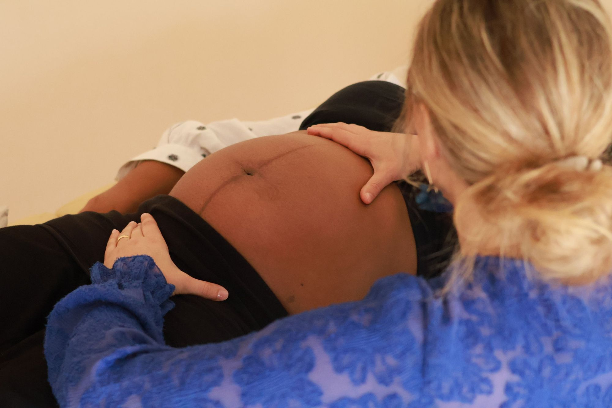
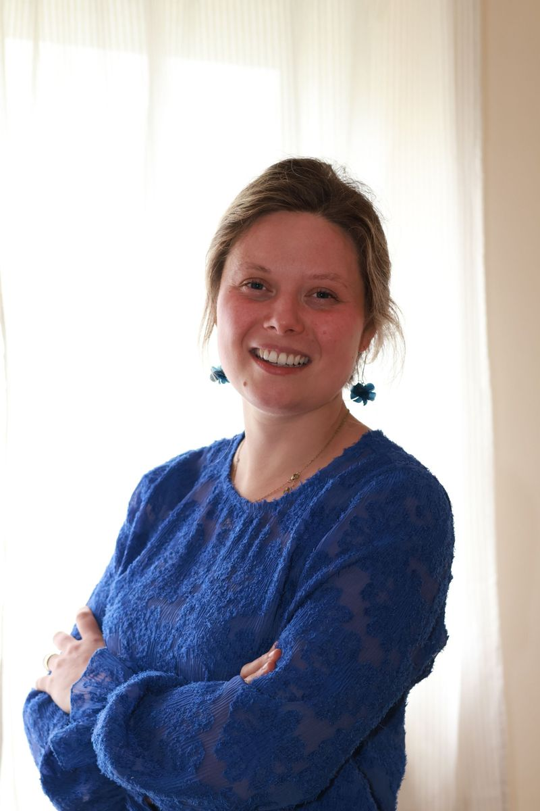

Maak kennis met Rebecca
Persoonlijke begeleiding in een rustige praktijk, met tijd om naar je te luisteren en een behandeling voor te stellen die bij jouw noden past.
Maak een afspraakWaarmee ik je kan helpen

Over
Mijn naam is Rebecca Taillieu. Na mijn opleiding kinesitherapie aan de KU Leuven ben ik aan de slag gegaan in het psychiatrisch ziekenhuis Sint-Kamillus in Bierbeek, waar ik nu al zes jaar werk.
Om mijn patiënten nog beter te helpen, volg ik daarnaast de opleiding fasciatherapie bij Fascia College: een zachte en diepgaande manuele benadering.
In mijn praktijk breng ik beide samen. Ik neem de tijd om te luisteren en te begrijpen waar je pijn vandaan komt, en samen stellen we een plan op dat past bij jouw lichaam, je ritme en je doelen, met praktische oefeningen die je ook thuis kunt doen.
Maak een afspraak